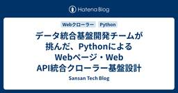

Sansan Tech Blog
https://buildersbox.corp-sansan.com/
Sansanのものづくりを支えるメンバーの技術やデザイン、プロダクトマネジメントの情報を発信
フィード

同じ会社なのに、こんなに違う。Sansan、Eight、Bill Oneのモバイル開発【前半：技術選定・開発プロセス】 2
2
Sansan Tech Blog
DroidKaigiやiOSDCが近づく中、現在Sansanでは「モバイルブログリレー」を実施しています。今回はその特別編として、営業AXサービス「Sansan」、名刺アプリ「Eight」、経理AXサービス「Bill One」でモバイル開発に携わるエンジニアによる座談会をお届けします！3つのプロダクトでは、プロダクトのフェーズや採用している技術、チーム構成、開発の進め方もさまざまです。今回は、Sansan 石田 、Eight 小清水 、Bill One 赤城 の3名に、それぞれのモバイル開発について話を聞きました。前半では、各プロダクトの技術選定やチームづくり、日々の開発プロセスについて語りま…
1日前

サービスごとに異なる原本管理を、一つの仕組みへ ──Digitization部「原本管理プロジェクト」の裏側
Sansan Tech Blog
Sansan株式会社では、名刺や請求書、契約書など、お客様からお預かりした紙の情報をデータ化しています。データ化の裏側では、スキャンセンターで紙そのものを受け取り、保管し、必要な場所へ届ける「原本管理」の業務があります。こうした原本管理を一元化するために、Digitization部が開発を進めています。今回のインタビューでは、プロジェクトオーナーの相川、開発を担当する長尾、現場で運用に携わる桜庭に、プロジェクトの背景や、現場と開発が一緒に仕組みをつくってきたプロセスについて聞きました。 相川 俊介 / Shunsuke AikawaDigitization部 Scan Engineeringグ…
2日前

人事データ起点で入社アカウント作成を自動化する：「Corporate DataBridge」で実現した情シス業務改善
Sansan Tech Blog
この記事は「EXをシンプルにする」に向き合う 情シスブログリレーの第5回です。前回の記事は、こちらです。 はじめに こんにちは。Sansan技術本部コーポレートシステム部の上羅です。 はじめに私の所属する部門について簡単に紹介させてください。コーポレートシステム部は、いわゆる情報システム部門（情シス）にあたる組織で、「EXをシンプルにする」というミッションを掲げています。EXとはEmployee Experience（従業員体験）のことです。私たちはこのミッションのもと、従業員が日々利用する社内システム、SaaS、クラウド環境の設計・開発・運用を担当しています。 入社者向けのSaaSアカウント…
3日前

PyO3でPythonのボトルネックを高速化した話
Sansan Tech Blog
本記事は、有志によるPyCon JP盛り上げイベントの一環として執筆したテックブログです！残念ながら採択とはならなかったプロポーザルですが、Pythonのボトルネックを高速化する知見として公開します。 buildersbox.corp-sansan.com こんにちは、技術本部 研究開発部 Architectグループの蔀です。経理AXサービス「Bill One」のAI機能の開発を担当しています。2025年11月、Bill Oneは「AI自動照合」という機能をリリース*1しました。この機能は、これまで人手で行っていた請求書の内容と納品・検収データとの照合や、発注データとの総額・明細単位での照合を…
3日前

Best Engineer Awards 2026 by Ciscoにエンドユーザーとして初めて選出されました
Sansan Tech Blog
はじめに こんにちは、コーポレートシステム部の正木です。コーポレートエンジニアとして社内システムやインフラに関連する設計・開発・運用を担当しています。 まず、部門について簡単に紹介します。私が所属するのはコーポレートシステム部という部門で、いわゆる情報システム部門（情シス）です。部のミッションとして掲げているのが「EXをシンプルにする」というものです。EXとはEmployee Experience（従業員体験）を指し、従業員が働く上での体験価値を高めることを目指しています。 今回は、2026年8月5日にシスコシステムズ合同会社（以下、シスコ）主催の「Best Engineer Awards 2…
5日前

データ統合基盤開発チームが挑んだ、PythonによるWebページ・Web API統合クローラー基盤設計
Sansan Tech Blog
本記事は、有志によるPyCon JP盛り上げイベントの一環として執筆したテックブログです！残念ながら採択とはならなかったプロポーザルですが、Pythonによるデータ収集基盤設計の知見として公開します。 buildersbox.corp-sansan.com こんにちは。Data Intelligence Engineering Unit のMaster Dataグループに所属している佐藤太一です。 私たちのグループでは、さまざまなプロダクトが利用する企業・人物のマスタデータ統合基盤を開発しています。私はその中で、外部データソースから継続的にデータを集める「データ収集基盤」の開発・運用を主に担当…
6日前

Platform Engineering UnitでGoogle Cloud Next Tokyo 26に参加しました
Sansan Tech Blog
はじめに Platform Engineering Unit（以降PEU）は、2026年7月30日・31日に東京ビッグサイトで開催された「Google Cloud Next Tokyo 26」に参加しました。 当日は各社のセッションを聴講し、日々の業務に生かせる学びを数多く得ることができました。 本記事では、PEUのエンジニアが各社のセッションを通じて得た現場の課題感や技術的なアプローチをもとに、Sansanの社内開発者PlatformであるOrbitの今後の進化に向けた重要な知見をまとめています。
8日前
AIの成果は「ツール」ではなく「仕組み」で決まる — Contract Oneが実践するAI駆動開発の全体像
Sansan Tech Blog
こんにちは。技術本部Contract One Engineering Unitで契約AXサービス「Contract One」の開発をしている中川です。 Contract Oneの開発組織では、2025年からClaude Codeを中心としたAI駆動開発に本格的に取り組んできました。その結果、リリースノート件数は週6件から83件へ——生産量にして約14倍になりました。 「AIツールを入れれば生産性が上がる」——これ、半分正解で半分間違いです。ツールを導入しただけでは、せいぜい1.5倍止まりでした。14倍にしたのはツールそのものではなく、ツールを生かす仕組みです。 この記事では、Contract …
9日前
AI時代の新しいセキュリティのカタチをつくる。 30年の経験者がSansanを選んだ理由
Sansan Tech Blog
キャリアは、選択の積み重ねでできています。 どんな経験を経て、なぜSansanを選び、いまどんな挑戦に向き合っているのか。 「Sansan 3 Stories」では、これまでの歩みと、実際にSansanで働いて感じたこと、そしてこれからの挑戦を「過去・現在・未来」の3つのストーリーでお届けします。今回のインタビューでは、約30年にわたり情報セキュリティの最前線に立ち続け、Sansanへ入社した情報セキュリティ部の鴨志田に話を聞きました。 鴨志田 昭輝 / Akiteru Kamoshida情報セキュリティ部 部長1996年、大学院の研究室配属をきっかけにセキュリティ分野に携わり、以降30年にわ…
9日前
SOCからプロダクト開発へ。セキュリティエンジニアが認証基盤チームにJumpした話
Sansan Tech Blog
技術本部Platform Engineering Unit Identity Platformグループの吉山です。 弊社が提供する経理AXサービス「Bill One」や契約AXサービス「Contract One」といったプロダクトが利用する共通認証基盤「Auth One」の開発と運用に携わっています。 私は新卒で入社してから6年間、技術本部情報セキュリティ部という部署に所属していました。 社内からの不審な事象報告の対応、アラート監視といったいわゆるSOC（Security Operation Center）業務を中心に担当していました。 その他にもインシデントレスポンス、調査に利用するSIEM…
10日前
YANS2026にプラチナスポンサーとして参加します！
Sansan Tech Blog
こんにちは。Sansan株式会社 研究開発部の大田尾 匠です。Sansan株式会社は、2026年8月17日（月）〜2026年8月18日（火）に仙台で開催される第21回言語処理若手シンポジウム（YANS2026）にプラチナスポンサーとして参加します。当日は5名の研究員が現地参加し、企業ブースを出展します。また、2件の研究ポスター発表も予定しています。
10日前
GitHub Enterprise Cloud with EMUのIAMを作る
Sansan Tech Blog
この記事は「EXをシンプルにする」に向き合う 情シスブログリレーの第4回です。前回の記事は、Claude Enterpriseのアカウント管理と利用上限管理を自動化している話です。 技術本部 コーポレートシステム部 Corporate ArchitectureグループのMakoto Nagaiです。 最初に所属先のコーポレートシステム部門について簡単に紹介させてください。 コーポレートシステム部は、情報システム部門（いわゆる情シス）にあたります。 部のミッションとして「EXをシンプルにする」を掲げています。EXとはEmployee Experience（従業員体験）のことです。 以前のGitH…
10日前
MIRU2026への参加報告
Sansan Tech Blog
こんにちは。研究開発部の大竹です。 今年も夏本番となりましたが、皆さまいかがお過ごしでしょうか。 2026年8月3日（月）から8月6日（木）にかけて、長崎県長崎市の出島メッセ長崎にて「第29回 画像の認識・理解シンポジウム（MIRU2026）」が開催されました。弊社からは計6名の研究員が現地に赴き、企業展示を行いました。本ブログはそのレポートです。
16日前
Claude Enterpriseのアカウント管理と利用上限管理を自動化している話
Sansan Tech Blog
この記事は「EXをシンプルにする」に向き合う 情シスブログリレーの第3回です。 はじめに こんにちは、技術本部 コーポレートシステム部Corporate Architectureグループの小松です。 私たちのグループは、社内のアカウント基盤と業務システムを整備し、EX（従業員体験）をシンプルにすることをミッションにしています。 Sansanでは、全従業員がClaudeを利用できる環境としてClaude Enterpriseを全社導入しました。 対象は1000名以上の規模です。 契約して招待すれば終わり、とはいかないのが全社導入です。 誰にシートを配るか、誰にどの機能を許可するか、利用額の上限を…
18日前
Google Cloud Next Tokyo 26で「GKE基盤OrbitにおけるAIエージェントの実践」について登壇してきました
Sansan Tech Blog
こんにちは、Platform Engineering Unitの辻田です。 2026年7月30日（木）〜31日（金）に開催されたGoogle Cloud Next Tokyo 26で登壇してきました。 昨年に続き、ありがたいことに今年もプロポーザルが採択され、登壇する機会をいただきました。昨年は内部開発者プラットフォーム「Orbit」の立ち上げについてお話ししましたが（昨年の登壇資料はこちら）、今回はその後のOrbitの成長と、そこで新たに直面した壁、そしてAIエージェントを取り込んだ実践について発表しました。
18日前
新卒エンジニアがAI音声入力機能のAndroid展開をリードした話
Sansan Tech Blog
はじめに こんにちは。技術本部 Sansan Engineering Unit Mobile Applicationグループの上野（@cardseditor）です。2025年4月に新卒で入社し、SansanのAndroidアプリ開発に携わっています。 DroidKaigiやiOSDCが近づいていることもあり、Sansanモバイルブログリレーを実施中です。この記事はその第2弾となります！ さて、SansanではiOS版で先行リリースされたAI音声入力機能を、Android版にも拡大して届けるための開発を進めてきました。この機能は、商談中の会話をスマホアプリで録音し、文字起こしと要約を行って商談記…
19日前
Eight iOSアプリで実装したStoreKit 2の購入処理とつまずいたこと
Sansan Tech Blog
はじめに こんにちは、技術本部 Eight Engineering Unit Mobile Applicationグループに所属している高橋です。名刺アプリ「Eight」のiOS版（以降、Eight iOSアプリ）の開発を担当しています。 Eightでは、WWDC23の「What’s new in App Store server APIs」で、購入レシートをApp Store側で検証するためのverifyReceiptエンドポイントの非推奨化が発表されたことを受け、App Store Server APIへの移行を進めました。このタイミングに合わせて、Eight iOSアプリの購入処理もSt…
20日前
Feature FlagとRemote Configで大きな機能を早く混ぜて安全に出す
Sansan Tech Blog
Sansanモバイルブログリレー 技術本部Eight Engineering Unit Mobile Applicationグループに所属しているAndroidエンジニアの若田（@wakanao_banana）です。毎朝バナナとヨーグルトを食べています。 Sansanモバイルブログリレーとは SansanのMobile Application グループでは、iOSDC Japan 2026やDroidKaigi 2026の開催にあわせて、モバイルアプリ業界をより一層盛り上げるために、日々の開発で得た知見をブログリレー形式で発信することを始めました。この記事はその第1弾となります。 アプリ開発の…
22日前
リリース数増加のその先へ。進化し続けるエンジニアの役割ーーAIを組織の力に。Contract One開発の今【後編】
Sansan Tech Blog
Contract One Engineering Unitでは、生成AIの活用をきっかけに、リリース数が週6件から100件超へと増加するなど、開発の生産量が大きく伸びています。 しかし、その変化は「AIを導入しただけ」で実現したものではありませんでした。前編では、Contract One Engineering Unitが生成AIを活用しながら、仕様の整備やSkill化、標準化によって生産量を伸ばしてきた過程を聞きました。後編では、開発の生産量が上がったことで新たに見えてきたボトルネックと、そこから広がっていったエンジニアの役割について聞きました。 大島 武徳 / Takenori Oshim…
23日前
2026年8月技術イベント予定
Sansan Tech Blog
Sansan株式会社では、技術イベントや勉強会の主催・登壇・協賛を行っています。 各イベントの詳細については、以下のリンクからご確認ください。 ※開催状況により、すでに受付を終了している場合がございます。 ※掲載している内容は公開当時の情報です。最新情報は各イベントページをご確認ください。
23日前
AIだけでは変えられない。生産量10倍超を実現したスキル化と標準化ーーAIを組織の力に。Contract One開発の今【前編】
Sansan Tech Blog
Contract One Engineering Unitでは、生成AIの活用をきっかけに、リリース数が週6件から100件超へと増加するなど、開発の生産量が大きく伸びています。 しかし、その変化は「AIを導入しただけ」で実現したものではありませんでした。AIを組織の力に変えたものは何だったのか。AI活用を推進してきた部長の大島とペトラスに、その実践を聞きました。 大島 武徳 / Takenori OshimaContract One Engineering Unit 部長新卒でソニー・コンピュータエンタテインメント（現SIE）に入社後、トヨタ、TRI-AD（現Woven by Toyota）、…
23日前
「博士号への挑戦を、Sansanが本気で後押しする」 社会人博士支援制度をリニューアルした理由
Sansan Tech Blog
Sansan株式会社は2026年7月、社会人博士支援制度をリニューアルしました。これまでも、研究成果をプロダクトや事業へ生かす取り組みを続けてきましたが、その取り組みをさらに加速させるため、博士課程に挑戦する研究員を支援する制度を見直しました。「週4日は業務、週1日は研究に取り組める」仕組みはそのままに、より挑戦しやすい制度へとアップデートしています。なぜ今、この制度を刷新したのか。そして、博士課程で培われる経験は、事業やプロダクト開発にどのような価値をもたらすのか。制度設計を主導したCTOの笹川と、働きながら博士号を取得した橋本に話を聞きました。 笹川 裕⼈ / Hirohito Sasak…
24日前
組織改編に強いグループ運用を作る：人事データ起点のOkta×Googleグループ自動化
Sansan Tech Blog
この記事は「EXをシンプルにする」に向き合う 情シスブログリレーの第2回です。前回の記事は、こちらです。 はじめに 組織改編のたびに、各組織の担当者がGoogleグループのメンバーを手作業で入れ替える。おそらく多くの会社で見られるこの運用を、SansanのIdPであるOktaを中心とした、Okta User Profileベースの自動化に置き換えました。結果として、各組織で対応していたこの運用作業をなくすことができています。
25日前
possibleではなくprobableをーー堅実なAI活用の先に見えた景色
Sansan Tech Blog
こんにちは。Contract One Engineering Unitで部長をしている大島です。前回の記事「自働化、カイゼン、標準化ーー組織のAI活用を3倍にする製造業の知恵」では、トヨタ生産方式の考え方を借りて、組織としてAIを活用する仕組みづくりについて書きました。今回はその続編として、この1年の結果と、そこから見つけた事業成長の方法について書きたいと思います。
1ヶ月前
MIRU2026にゴールドスポンサーとして参加します
Sansan Tech Blog
こんにちは、研究開発部の大竹ひなです。今年もMIRUの季節がやってきました。今回はどんな出会いや発見があるか、今からわくわくしています。 Sansan株式会社は、2026年8月3日（月）〜8月6日（木）に出島メッセ長崎にて開催される「第29回 画像の認識・理解シンポジウム（MIRU2026）」にゴールドスポンサーとして協賛し、企業ブースを出展します。本シンポジウムへの協賛は2020年から続いており、今年で7年目となります。 MIRU2026への参加にあたり、Sansanでは企業ブース出展、ポスター発表、そして人事企画による特別イベントの開催を予定しています。 Sansan企画イベント MIRU…
1ヶ月前
エンジニアの英語学習に役立つ技術ポッドキャスト5選
Sansan Tech Blog
技術本部 Data Intelligence Engineering Unitの Makoto Nagai です。 Sansanに入社して2年ほどになりますが、それ以前は海外で6年ほど働いていました。 海外で働いている間は英語を日常的に使う機会がありましたが、日本にいると英語を使う機会が少ないため、英語力を維持できるように意識して勉強しています。 エンジニアが英語を勉強する上で、技術ポッドキャストはよい教材です！ 設計や技術議論に使うフレーズが多く、たとえば What are the trade-offs? は設計議論で使えますし、Can you walk us through the arc…
1ヶ月前
情シスの内製データ連携基盤「Corporate DataBridge」が支える、変化に強い組織データ活用
Sansan Tech Blog
この記事は「EXをシンプルにする」に向き合う 情シスブログリレーの第1回です。 こんにちは。Sansan技術本部コーポレートシステム部の湯川です。 はじめに私の所属する部門について簡単に紹介させてください。コーポレートシステム部は、いわゆる情報システム部門（情シス）にあたる組織で、「EXをシンプルにする」というミッションを掲げています。EXとはEmployee Experience（従業員体験）のことです。私たちはこのミッションのもと、従業員が日々利用する社内システム、SaaS、クラウド環境の設計・開発・運用を担当しています。
1ヶ月前
PyCon JP 2026にSilverスポンサーとして協賛します！
Sansan Tech Blog
Sansan株式会社は、2026年に開催される「PyCon JP 2026」に、Silverスポンサーとして協賛します！ 本記事では、協賛の背景や目的、取り組みについてご紹介します。 「PyCon JP 2026 ロゴ」 デザイン：Daksh Jain、提供：PyCon JP 2026／CC BY 4.0 PyCon JPとは PyCon JPは、プログラミング言語Pythonの国内最大級のカンファレンスです。 国内外から多くのPythonエンジニア・研究者・学生が集まり、技術セッションやワークショップ、企業スポンサーによるブース出展などを通じて、Pythonコミュニティー全体の交流と発展を支…
1ヶ月前
AIが速くなるほど、人が集まる価値は上がる——開発合宿という最速リリース戦略
Sansan Tech Blog
こんにちは、Contract One Engineering Unit部長の大島です。 先日、Contract One Engineering Unitの16名で、湯河原温泉にて2泊3日の開発合宿を行ってきました。半年に1回のペースで続けている合宿で、今回が3回目です。 合宿参加メンバーAIがコードを書き、調査し、設計の壁打ち相手にまでなってくれる時代に、なぜわざわざ全員で温泉宿に集まって開発合宿をするのでしょうか。結論から言うと、開発合宿は、AI時代の今もっとも開発スピードを上げる手段の一つだと考えているからです。
1ヶ月前
インフラの枠を超えて。データと仕組みで、Digitization部の未来をつくる
Sansan Tech Blog
キャリアは、選択の積み重ねでできています。 どんな経験を経て、なぜSansanを選び、いまどんな挑戦に向き合っているのか。 「Sansan 3 Stories」では、これまでの歩みと、実際にSansanで働いて感じたこと、そしてこれからの挑戦を「過去・現在・未来」の3つのストーリーでお届けします。今回のインタビューでは、SIerや金融機関でインフラ・セキュリティー・クラウド基盤の構築に携わり、現在はDigitization部*1でインフラエンジニアとして業務改善やデータ基盤の構築に取り組む中村に話を聞きました。 中村 勇介 / Yusuke NakamuraDigitization部 Infr…
1ヶ月前